ファイルとディレクトリ構造のコピー(XCOPY)
ファイルとディレクトリ構造のコピーなど高機能なコピー機能がある XCOPY コマンドの使い方について解説します。
目次
XCOPYコマンドの使い方
XCOPY コマンドは COPY 機能と似ていますが、より高機能なコピー機能を利用することができます。書式は次の通りです。
XCOPY コピー元 [コピー先] [/A | /M] [/D[:日付]] [/P] [/S [/E]] [/V] [/W]
[/C] [/I] [/Q] [/F] [/L] [/G] [/H] [/R] [/T] [/U]
[/K] [/N] [/O] [/X] [/Y] [/-Y] [/Z] [/B] [/J]
[/EXCLUDE:ファイル1[+ファイル2][+ファイル3]...]
多くのオプションが用意されていますが、この中から知っておくと便利だと思われる使い方について解説していきます。
ファイルをコピーする
COPY コマンドと同じようにファイルをコピーする場合にも XCOPY コマンドは利用できます。例えばカレントディレクトリにある memo.txt を同じディレクトリ内の memo_back.txt としてコピーするには次のように実行します。
xcopy memo.txt memo_back.txt
XCOPYコマンドを実行すると「memo_back.txt は受け側のファイル名ですか、またはディレクトリ名ですか (F= ファイル、D= ディレクトリ)?」と表示されます。
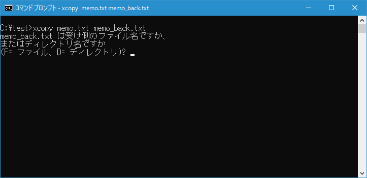
今回はファイルなので[f]キーを押すとファイルのコピーが完了します。
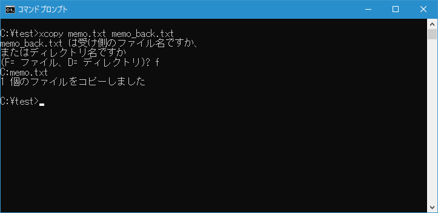
DIR コマンドを使って確認してみると、コピーされた memo_back.txt が作成されていることが確認できます。
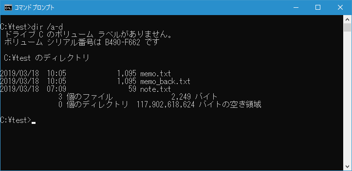
-- --
送り先として存在するディレクトリ名をを指定すると、同じファイル名でコピーが行われます。例えばカレントディレクトリにある memo.txt をカレントディレクトリ内の既に存在している document ディレクトリに同じ名前でコピーするには次のように実行します。
xcopy memo.txt document
document ディレクトリに同じファイル名でコピーがされました。
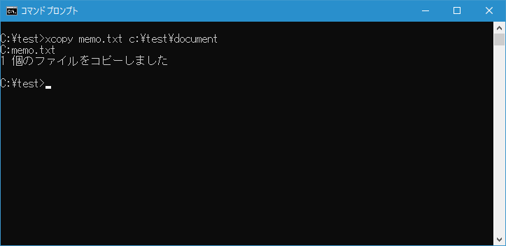
TREE コマンドを使って確認してみると、doc ディレクトリが作成されて、ディレクトリの中に コピー元と同じファイル名で memo.txt が作成されていることが確認できます。
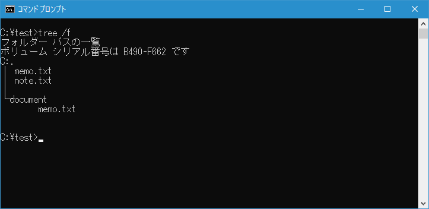
-- --
送り先として存在しないディレクトリ名をを指定すると、ディレクトリを新規に作成した上で同じファイル名でコピーが行われます。例えばカレントディレクトリにある memo.txt をカレントディレクトリ内の存在していない doc ディレクトリに同じ名前でコピーするには次のように実行します。
xcopy memo.txt doc
XCOPYコマンドを実行すると「doc は受け側のファイル名ですか、またはディレクトリ名ですか (F= ファイル、D= ディレクトリ)?」と表示されます。
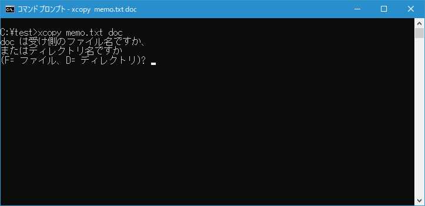
今回はディレクトリなので[d]キーを押すと新しいディレクトリが作成されてファイルのコピーが完了します。
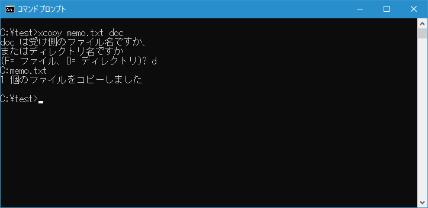
TREE コマンドを使って確認してみると、doc ディレクトリが作成されて、ディレクトリの中に コピー元と同じファイル名で memo.txt が作成されていることが確認できます。
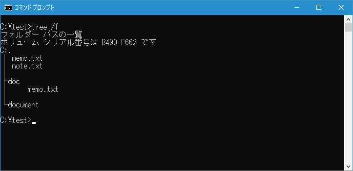
ディレクトリ構造をコピーする
XCOPY コマンドでは、「/E」オプションを付けることで、指定したディレクトリに含まれるファイルやサブディレクトリなどをまとめて別のディレクトリにコピーすることができます。例えば c:\test\document ディレクトリに含まれるファイルやサブディレクトリをまとめて d:\test\doc ディレクトリにコピーする場合は次のように実行します。
xcopy /e c:\test\document d:\test\doc
XCOPYコマンドを実行すると「D:test\doc は受け側のファイル名ですか、またはディレクトリ名ですか (F= ファイル、D= ディレクトリ)?」と表示されます。
今回はディレクトリなので[d]キーを押すと新しいディレクトリが作成されてファイルとディレクトリのコピーが完了します。

TREE コマンドを使って確認してみると、コピー元のディレクトリとファイルは次のようになっていました。
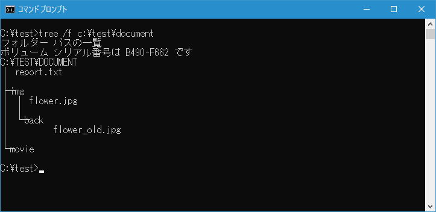
XCOPY コマンド実行後に、コピー先のディレクトリを TREE コマンドを使って確認してみると、コピー元のディレクトリとファイルはすべてコピーされていることが確認できます。
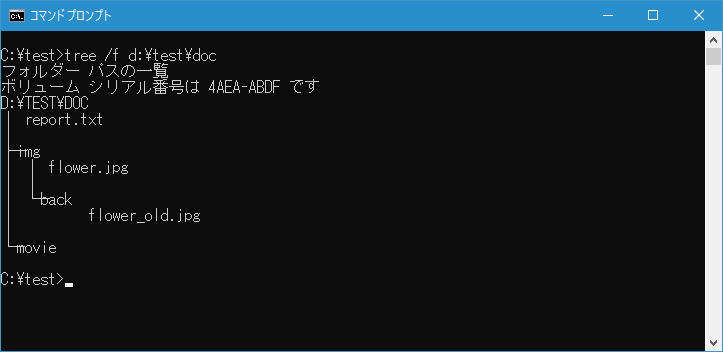
空のディレクトリを除いてディレクトリ構造をコピーする
XCOPY コマンドでは、「/S」オプションを付けることで、指定したディレクトリに含まれるファイルやサブディレクトリなど空のディレクトリは除いてまとめて別のディレクトリにコピーすることができます。例えば c:\test\document ディレクトリに含まれるファイルやサブディレクトリを空のディレクトリは除いてまとめて d:\test\doc ディレクトリにコピーする場合は次のように実行します。
xcopy /s c:\test\document d:\test\doc
XCOPYコマンドを実行すると「D:test\doc は受け側のファイル名ですか、またはディレクトリ名ですか (F= ファイル、D= ディレクトリ)?」と表示されます。
今回はディレクトリなので[d]キーを押すと新しいディレクトリが作成されてファイルとディレクトリのコピーが完了します。この時空のディレクトリはコピーされません。
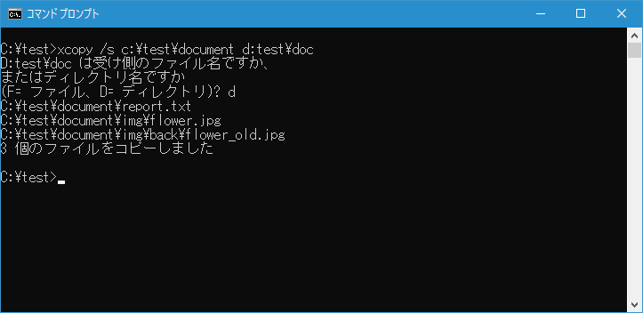
TREE コマンドを使って確認してみると、コピー元のディレクトリとファイルは次のようになっていました。
XCOPY コマンド実行後に、コピー先のディレクトリを TREE コマンドを使って確認してみると、コピー元のディレクトリとファイルは空のディレクトリは除いてすべてコピーされていることが確認できます。
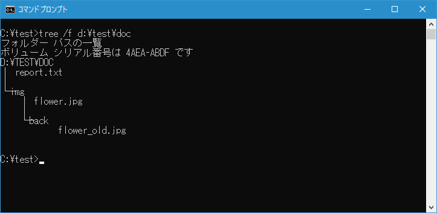
ディレクトリ構造だけをコピーする
XCOPY コマンドでは、「/T」オプションを付けることで、指定したディレクトリにサブディレクトリなどディレクトリ構造だけを別のディレクトリにコピーすることができます。例えば c:\test\document ディレクトリに含まれるサブディレクトリの構造だけを d:\test\doc ディレクトリにコピーする場合は次のように実行します。
xcopy /t c:\test\document d:\test\doc
XCOPYコマンドを実行すると「D:test\doc は受け側のファイル名ですか、またはディレクトリ名ですか (F= ファイル、D= ディレクトリ)?」と表示されます。
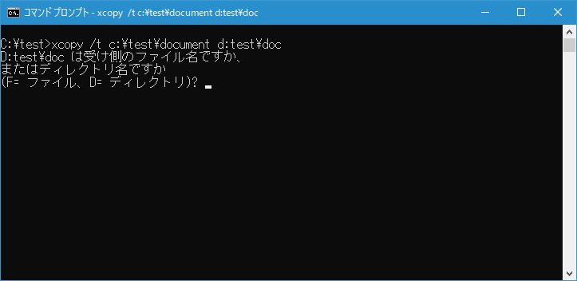
今回はディレクトリなので[d]キーを押すと新しいディレクトリが作成されてディレクトリ構造だけがのコピーされます。この時空のディレクトリはコピーされません。
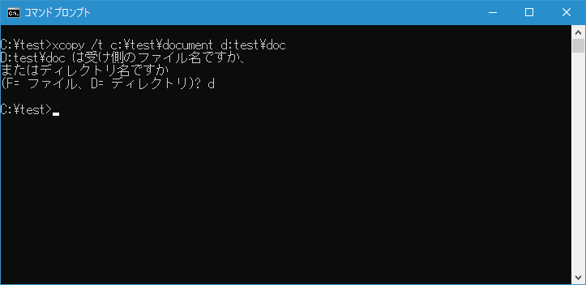
TREE コマンドを使って確認してみると、コピー元のディレクトリとファイルは次のようになっていました。

XCOPY コマンド実行後に、コピー先のディレクトリを TREE コマンドを使って確認してみると、コピー元のディレクトリ構造だけがコピーされていることが確認できます。
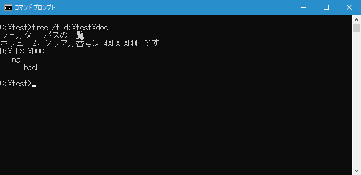
なお空のディレクトリも含めてディレクトリ構造だけをコピーしたい場合には、「/T」オプションに加えて「/E」オプションも付けてください。
xcopy /t /e c:\test\document d:\test\doc
指定した日付以降に作成または更新されたファイルだけをコピーする
XCOPY コマンドでは、「/D:月-日-年」オプションを付けることで、指定した日付以降に作成または更新されたファイルだけをコピーすることができます。例えば c:\test& ディレクトリに含まれるファイルの中で 2019-01-01 以降に作成または更新されたものだけを d:\test ディレクトリにコピーする場合は次のように実行します。
xcopy /d:1-1-2019 c:\test d:\test
コピー前にカレントディレクトリに含まれるファイルの作成日または更新時を確認すると 2019-01-01 以降に作成または更新されたファイルは2つでした。
XCOPY コマンドを実行すると、先ほどの条件に一致していた2つのファイルだけがコピーされました。
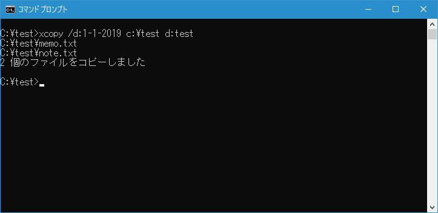
指定した文字列が含まれるファイルを除外してコピーする
XCOPY コマンドでは、「/EXCLUDE:ファイル1[+ファイル2]...」オプションを付けることで、指定した文字列が含まれるファイルを除外してコピーすることができます。例えば c:\test\document ディレクトリに含まれるファイルやサブディレクトリの中で .bak がファイル名に含まれるファイルは除外したものを d:\test\doc ディレクトリにコピーする場合は次のように実行します。
xcopy /e /exclude:c:\test\excludelist.txt c:\test\document d:\test\doc
「/EXCLUDE:ファイル1[+ファイル2]...」オプションの引数にはファイルを指定します。ファイルには除外したい文字列を1行につき1つ指定して記述してください。今回は c:\test\excludelist.txt を作成し次のように記述しました。
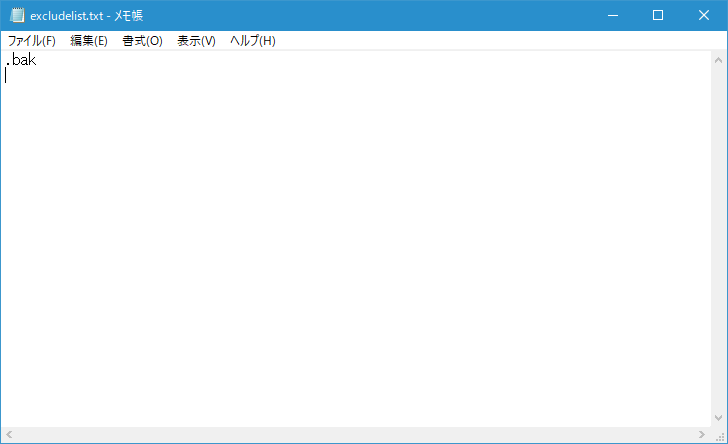
XCOPY コマンドを実行すると次のように3つのファイルがコピーされました。
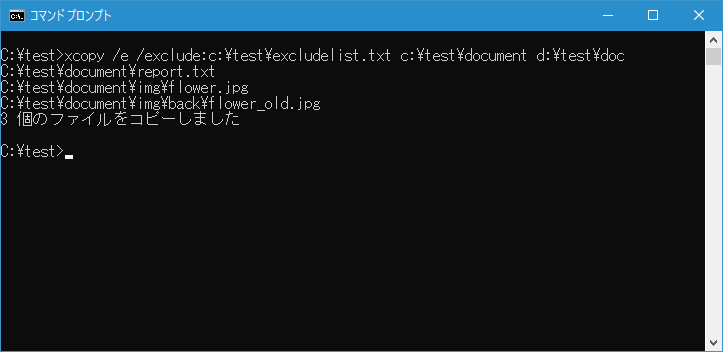
TREE コマンドを使って確認してみると、コピー元のディレクトリとファイルは次のようになっていました。
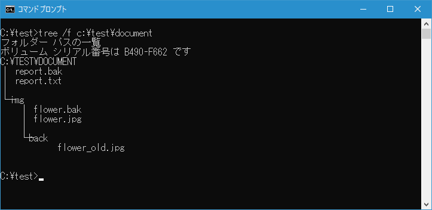
XCOPY コマンド実行後に、コピー先のディレクトリを TREE コマンドを使って確認してみると、.bak がファイル名に含まれるファイルを除いて3つのファイルがコピーされていることが確認できます。
-- --
XCOPY コマンドを使ってファイルとディレクトリ構造のコピーを行う方法について解説しました。
( Written by Tatsuo Ikura )

著者 / TATSUO IKURA
初心者～中級者の方を対象としたプログラミング方法や開発環境の構築の解説を行うサイトの運営を行っています。